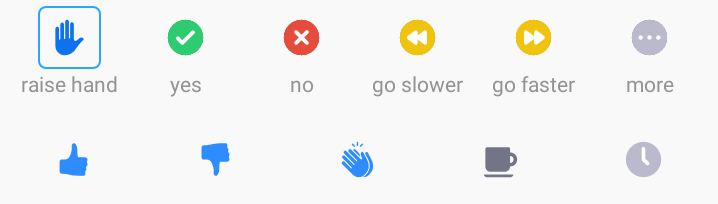

Day 2
My markdown exercise day 2 to do
With plain markdown you can highlight in two ways:
- Italic
- Bold
You can add a link to your favourite website.
Or add an image from that website (find it at https://www.sib.swiss/images/banners/banner_research_infrastructure.jpg):

You can also add a local image (this one is stored in ../assets/images/zoom_icons.png):

Sharing a code is easy, inline you refer to code like this: pip install mkdocs.
But often it’s more convenient in a code block, e.g. with shell highlighting:
FILE=my_genes.csv
cat $FILE | cut -f 1,2 -d ','
Or with R highlighting for example:
df <- read.csv('my_genes.csv')

Warning
Do not overcommit the server!
code:
Generating a vector of integers:
a <- c(5,4,3,2,1)
Generating a list of integers:
a = [5,4,3,2,1]
Write an e-mail , add a pdf and wait 
test
Write an e-mail :material-send:, add a pdf :material-file-pdf: and wait :clock1:
Write an e-mail , add a pdf and wait
```